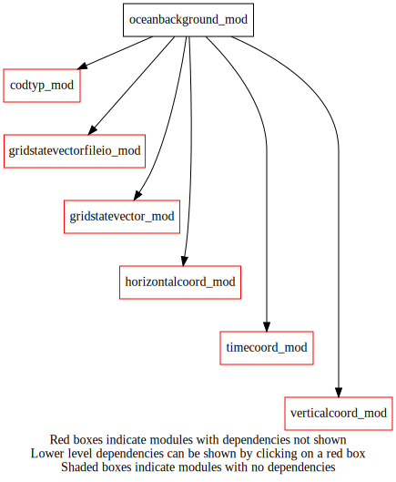
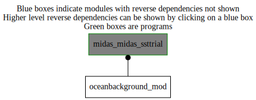

Dependency Diagrams:
 Direct Dependency Diagram¶
 Reverse Dependency Diagram¶
Description
MODULE oceanBackground_mod (prefix=’obgd’ category=’1. High-level functionality’)
- Purpose
storage for ocean background related subroutines
Quick access
- Routines
Needed modules
codtyp_mod: MODULE codtyp_mod (prefix=’codtyp’ category=’8. Low-level utilities and constants’)
gridstatevector_mod: MODULE gridStateVector_mod (prefix=’gsv’ category=’6. High-level data objects’)
gridstatevectorfileio_mod: MODULE gridStateVectorFile_mod (prefix=’gio’ category=’4. Data Object transformations’)
horizontalcoord_mod: MODULE HorizontalCoord_mod (prefix=’hco’ category=’7. Low-level data objects’)
verticalcoord_mod: MODULE verticalcoord (prefix=’vco’ category=’7. Low-level data objects’)
timecoord_mod: MODULE timeCoord (prefix=’tim’ category=’7. Low-level data objects’)Variables
Subroutines and functions
- subroutine oceanbackground_mod/obgd_computesstrial(hco, vco, trialdatestamp, analysisdatestamp, nmonthsclim, datestampclim, alphaclim, etiket)¶
- : Purpose: to compute SST background
xb(t) = (xa(t-1) - xclim(t-1))*alpha + xclim(t)
- Arguments
hco [struct_hco ,in,pointer] :: horizontal grid
vco [struct_vco ,in,pointer] :: vertical grid
trialdatestamp [integer ,in] :: trial datestamp
analysisdatestamp [integer ,in] :: datestamp for last analysis
nmonthsclim [integer ,in] :: number of climatological fields (= 12)
datestampclim (*) [integer ,in] :: datestamps of input climatology fields
alphaclim [real ,in] :: scalling factor to relax towards climatology
etiket [character ,in] :: etiket from namelist and for trial
- Called from
- Call to
gsv_allocate(),gio_readfromfile(),obgd_getclimatology(),gsv_modifydate(),gio_writetofile(),gsv_deallocate()
- subroutine oceanbackground_mod/obgd_getclimatology(datestamp, hco, vco, nmonthsclim, datestampclim, output)¶
- : Purpose: 1) to read SST climatological fields from a std file
2) to interpolate the field in time using the current day (t) in current month (m) SST(t) = SST_clim(m) + (t-1)/(ndays-1) * (SST_clim(m+1) - SST_clim(m)), where ndays is a number of days in current month
- Arguments
datestamp [integer ,in] :: date stamp for the current day
hco [struct_hco ,in,pointer] :: horizontal grid
vco [struct_vco ,in,pointer] :: vertical grid
nmonthsclim [integer ,in] :: number of records in the climatology file
datestampclim (*) [integer ,in] :: datestamps in the climatology file
output (*,*) [real ,inout] :: interpolated SST field from climatology
- Called from
- Call to
tim_datestamptoyyyymmddhh(),gsv_allocate(),gio_readfromfile(),gsv_deallocate()
{kind=link}
{kind=link}